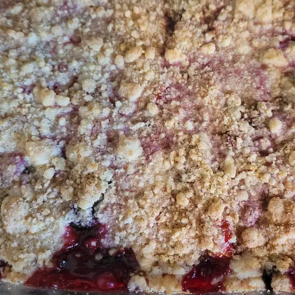

Content

Description
Economical and easy to make berry bars.
Kids love them. You can use any variety of berries that you like;
we used raspberries in this recipe.
Ingredients
- 1 1/2 cup of white sugar
- 1 teaspoon of baking powder
- 3 cups all-purpose flour
- 1 cup shortening
- 1 egg
- 1 pinch salt
- 1 pinch ground cinnamon
- 4 cups raspberries
- 3 teaspoons cornstarch
Steps
- Preheat the oven to 375 degrees F (190 degrees C). Grease a 13x9-inch pan.
-
Combine 1 cup sugar, flour, baking powder, salt, ground cinnamon,
shortening, and egg. The dough will be crumbly.
Pat half of the dough into the prepared pan.
- Combine remaining 1/2 cup sugar, cornstarch, and berries.
Place mixture over dough in pan. Crumble the remaining dough
over the tops of the berries.
- Bake in the preheated oven until top is slightly browned, about 45 minutes.